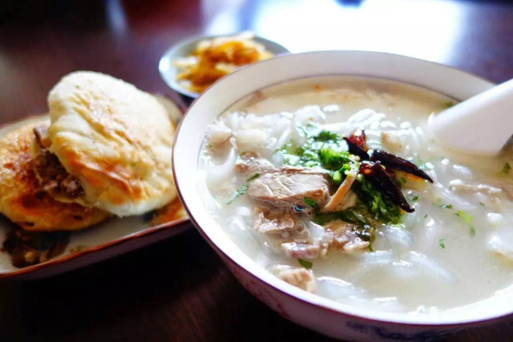

棱镜 | 食欲 色欲
节日季总是能吃特别多。
同事和学生带来的烘培小点心让下午茶格外充实；午餐除了日常的炒饭外还会点份汤羹暖身；虽然火锅一年四季都会去吃，但冬季呼朋引伴时总是特别理直气壮。
领市民卡时，发现已和过去的自己胖若两人，赶紧去买份板栗压压惊。偶尔也会惊讶于自己旺盛的食欲，尤其是约会遇到那些吃了两口便说自己饱了的人，一边担忧我这胃口这样下去胖成球的那天指日可待，一边又为对方担心是否是又一个社会上普遍的身材羞辱的受害者。
犹记得上次吃饭时远乔同学严肃而忧郁地对我说“有人说我胖。”我正在盛汤，不可置信地摇了摇头。想当初大一深秋时，被东北猝不及防的冷空气冻得恨不得把自己裹成粽子永不出门的我看着刚认识的远乔停下慢跑的脚步友好地和我打招呼，寒风中短裤下黝黑结实的大腿上矗立的汗毛像是在挑衅。我伴着羊肉咽下了那句“哈哈哈哈你也有今天”，转而开始严肃地聊起了这些对于身材的极高期待是多么不切实际。

近日读到一篇报道提到千禧一代（85-96年出生者）的性活跃度正陷入前所未有的低谷，并指出罪魁祸首或是各类小软件。科技虽能让人直白而便利地表达自己的欲望，却并未能理所当然地给人带来性福。在以照片为一切社交互动前提的系统内，外表获得了前所未有的重要性，而随之而来的便是一轮又一轮对身材和外表的极致追求，从针对女性的A4腰反手摸肚脐到要求男性的胸肌腹肌人鱼线，花样层出不穷的各类硬性指标让浏览小软件变得越发赏心悦目。
多美好的肉体们，有什么不好的？只有懒基佬，没有丑基佬哦！
只是这些健身励志鸡汤无非新时代的何不食肉糜。每天靠KEEP锻炼，抵制办公室奶茶小组的号召——这能够让体重不至于失控，但获得健身达人水准的各类肌肉群所消耗的时间与金钱的机会成本实在不低。无论是各级学生要面对的实验论文升学考试，还是职场人士面对的繁琐工作与永不见三倍工资的加班时间，足够长的待办事项清单上留有“练出超好身材”空间终归只是属于少数人的奢侈。
诚然与肥胖相关的健康问题值得重视，人也不该以年龄和忙碌为借口而忽略对自己身体的照顾，但在“带来健康问题的肥胖”与“腹肌能当搓衣板”之间有足够的空间让人开心而充实地生活。可在外表的竞技场内，无力支付成本的人无论在自己或他人眼中都仿佛失去了性生活的可能。
而这一现象在性少数人群当中则可能更为糟糕。对于朝九晚五甚至996时间表的人来说，日常浪漫邂逅的可能性微乎其微，性生活可能全靠在两到三秒内给见多识广的各位用户留下足够好的直观视觉印象。因此即使好身材意味着几个月高价的白煮鸡胸肉拌生菜、各类增肌减脂产品、以及足以多写两三篇论文或是项目书的时间，为了慰藉躁动的下半身，也只好一边健身房的合同上签字，一边想象着自己几个月后骄傲的自拍和无数的点赞。只是肉体是易消逝的——好不容易减低的体重在新项目的忙碌中不知不觉又回升了；练出的腹肌在疏于照顾后之后在用力吸气收腹才不情愿地露个脸。在身材的保质期内如果未能成功抵达本垒就有点担心事后会被吐槽是虚假广告，因此一个月内即使见面交流的时间或许还不如每天的带薪假期，也该真枪实炮地干一场了，毕竟没什么是高颜值和好身材解决不了的。
只是并非每个人在这样的相识中只想要肉体的快感，对不少人来说，爱与性总是如影随形，但长久而稳定的恋情需要的不仅仅是激情，更需要亲密关系与信任忠诚。科技虽然能为激情提供出口，但亲密关系需要足够多高质量的交流和面对面共处的时光，信任和忠诚绝非与生俱来的品质，也需要通过社会构建与同伴压力维系。对于“圈子”“网罗”的恐惧而选择单一的社交方式并不能让生活环境更为友好，主动加入到构建一个安全而友好的社群或许能提供新的选择。
所以，与其在家拿着手机无限遐（瞎）想，或对着别人照片评头论足享受着言语暴力带来的欢愉，不如出门与真实的人类面对面交流一场。
向阳花开的3322线下聊天，酷儿论坛的每周桌游，随时欢迎新人的到来。